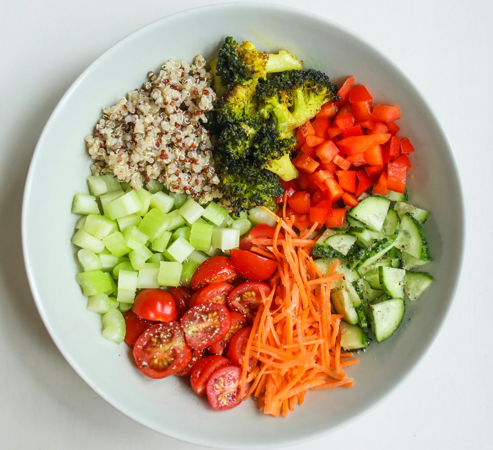
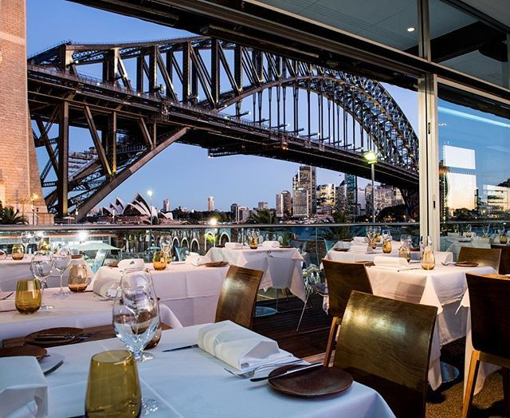
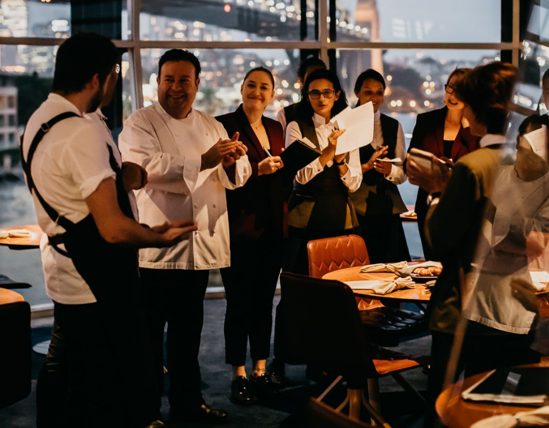
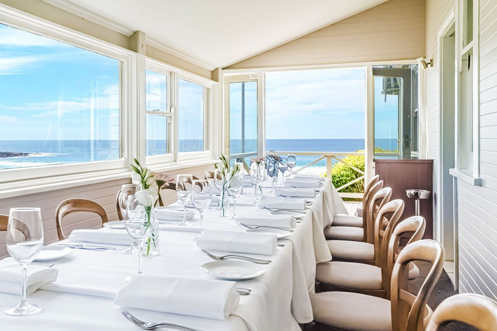
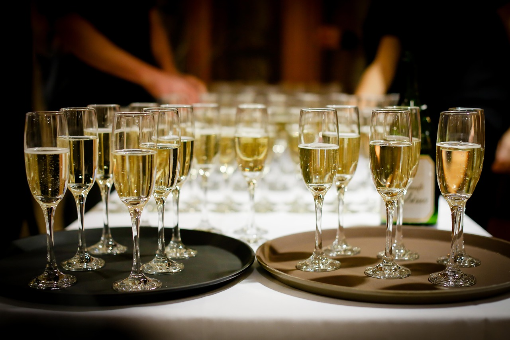
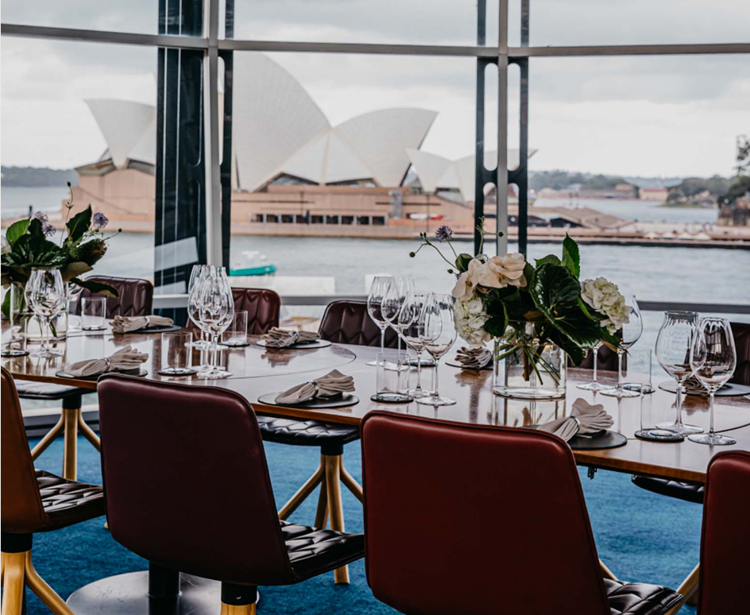
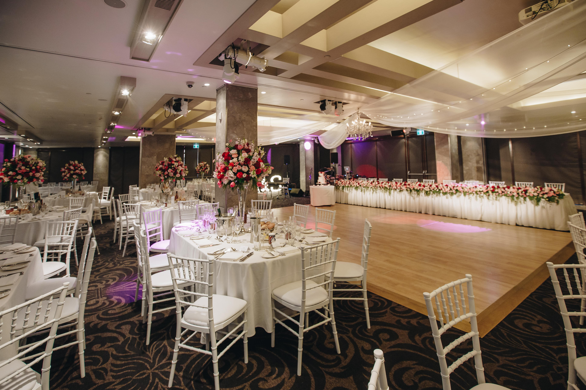
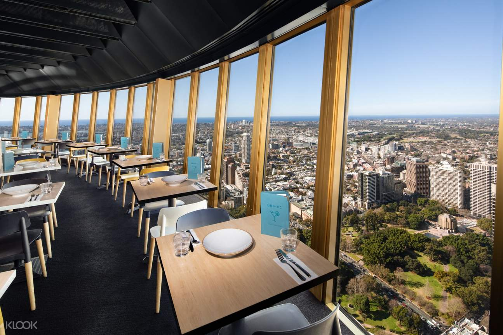

Menu
flavour and harmony is paramount.
begins in working closely with the farmers, fishermen, producers and artisans who cultivate bespoke produce exclusively for Quay. For each dish, the growth of every element and the selection of every ceramic piece is carefully considered and crafted for its role in the dining experience.
View More

The eight-course menu is available at lunch and dinner.
EIGHT-COURSE
Wild Blacklip abalone
young octopus, raw scallops
seaweed, aged vinegar
Smoked eel cream
sea cucumber, young walnuts
Murray cod roe
Native freshwater marron
sea urchin, tapioca, confit egg yolk mustard butter, marigold
Bone marrow pasta
Mud crab, pinstriped peanuts,
sour koji butter
Smoked eel cream
sea cucumber, young walnuts
Murray cod roe
Confit pig jowl
Maitake, Southern squid, hispi
sunchokes, salami, garum
Smoked oxtail
black garlic & chestnut purée
Manjimup truffle emulsion
Eight-Course Menu $355
Temperance Pairing $140
Quay Wine Pairing $200
Sommelier Wine Pairing $250
Benchmark Wine Pairing $1100
The six-course menu is available at lunch and dinner.
SIX-COURSE
Wild Blacklip abalone
young octopus, raw scallops
seaweed, aged vinegar
Smoked eel cream
sea cucumber, young walnuts
Murray cod roe
Native freshwater marron
sea urchin, tapioca, confit egg yolk mustard butter, marigold
Bone marrow pasta
Mud crab, pinstriped peanuts,
sour koji butter
Smoked eel cream
sea cucumber, young walnuts
Murray cod roe
Confit pig jowl
Maitake, Southern squid, hispi
sunchokes, salami, garum
Smoked oxtail
black garlic & chestnut purée
Manjimup truffle emulsion
six-Course Menu $355
Temperance Pairing $110
Quay Wine Pairing $160
Sommelier Wine Pairing $210
Benchmark Wine Pairing $850
FOUR-COURSE
Wild Blacklip abalone
young octopus, raw scallops
seaweed, aged vinegar
Native freshwater marron
sea urchin, tapioca, confit egg yolk
mustard butter, marigold
Confit pig jowl
Maitake, Southern squid, hispi
sunchokes, salami, garum
White Coral
Menu subject to change
Four-Course Menu $205
DRINKS
With an emphasis on showcasing quality wines that communicate a sense of place and
time,
the Quay wine list champions locally sourced produce while still tipping its cap to
international styles. A list of signature, classic, and non-alcoholic Quay cocktails has
been crafted to complement the wine list.
Quay restaurant offers a wide range ofpairing options curated by our beverageteam,
considering each diner's uniqueexperience. Discover our beveragepairings below.
Temperance:
A non-alcoholic pairing created by our
bar team and expertly served by our sommeliers.
Comprising special brews, cold-press beverages, and non-alcoholic
cocktails, the
Temperance is a playful combination exploring flavour and texture.
Quay Pairing:
Our classic approach to the world of wine, the Quay Pairing, explores familiar
producers, grapes, and regions from all over the world, all expertly matched to enhance
Executive Chef Peter Gilmore's acclaimed food.
Benchmark*:
As the name suggests, we benchmark wines aged in our Quay wine cellar, patiently
waiting
for the right moment to enjoy them—wines you may have only read or heard of
before.
Benchmark offers a unique opportunity to taste the history and future of wine
poured by
the glass alongside Peter Gilmore’s incredible dishes.
*All wines served from Coravin
ABOUT US
Chef Peter Gilmore. One of the country's most celebrated restaurants, Lazy Bear
has received Three Hats in the Good Food Guide for 22 consecutive years.
cuisine. The interplay of textures and colour brings life and a vibrance that
embraces the restaurant's place in the dress circle of Sydney
Harbour. An ode to the Australian landscape, from the vast ocean floor, to
the cracked bark of a paperbark tree, every detail from the ground up has been thoughtfully considered
View More


MEET THE TEAM
MEET THE TEAM
RESERVATIONS
LUNCH
DINNER
Make A Reservation
Book The Snow Egg

CONTACT US
CATERING FAQ'S
How can I place an order?
Our friendly catering manager is also happy to answer any questions over the phone prior to receiving an order by
email or on our website. Please note that we are sometimes unavailable to answer the phone during the mornings
when our team is dedicated to cooking and preparing orders fresh for that day. Please send an email if you cannot reach us by phone.
When is the cut off time?
Order for Tuesday, cut off is 4pm Monday.
Order for Wednesday, cut off is 4pm Tuesday.
Order for Thursday, cut off is 4pm Wednesday.
Order for Friday, cut off is 4pm Thursday.
rder for Saturday, cut off is 4pm Thursday
Requests that are sent after business hours will be viewed the following morning.
Late orders that are accepted after 4pm will be subject to a 10% surcharge.
What are the delivery times?
Deliveries requested outside of these hours can be discussed on an individual basis.
All deliveries have a 1/2 hour window.
What is the minimum spend?
Deliveries below $75 + HST may be accepted and will incur a $15 + HST surcharge.
Deliveries below minimum spends will unfortunately not be accepted on Saturday.
Do you allow pick-ups?
Cancellation Policy
Cancellations for Tuesday to Friday must be received no later than 4pm the day prior.
Cancellation requests for Monday orders must be received no later than 4pm the Friday prior.
Cancellation for Saturday orders must be received by 4pm the Thursday prior.

Events
awarded restaurants, with panoramic views encompassing the Sydney
Harbour Bridge and Sydney Opera House. Curate your perfect event at
Quay, from intimate dinner parties in the Private Dining Room, to long
lunches in the spectacular Upper Tower, to large cocktail events in
The Green Room -Quay delivers an immersive dining experience with views like no other.
Event Enquiry
View Event Details


WEDDINGS
heart of Sydney Harbour. With bespoke menus by Executive Chef Peter
Gilmore and panoramic views from the Harbour Bridge to the Opera House
, Quay provides an exquisite setting for your most special day.
With two exclusive reception spaces, Quay can accommodate small
receptions for up to 20 guests in the Upper Tower, and larger seated events
for 100 guests or elegant cocktail party receptions for up to 180 guests in
the Green Room.
Event Enquiry
View Wedding Details
PRIVATE DINING ROOM
up to ten guests. Featuring a floor to ceiling mirror to capture the Sydney
Opera House view for all guests, an elliptical spotted gum dining table, and
walls adorned by overlapping fabric veils referencing the colours of
Australian gum leaves on the forest floor, each thoughtful detail in the room
creates a warm, inclusive space.
Event Enquiry
View Event Details

UPPER TOWER
Floor to ceiling glass windows allow for views spanning Sydney Harbour
, taking in Circular Quay, the Sydney Opera House, the Harbour Bridge and
the historical charm of The Rocks. The private room is perched above the
main dining room, and seats up to 20 guests for lunch, Thursday through Sunday, and dinner on Wednesday.
Event Enquiry
View Events Details